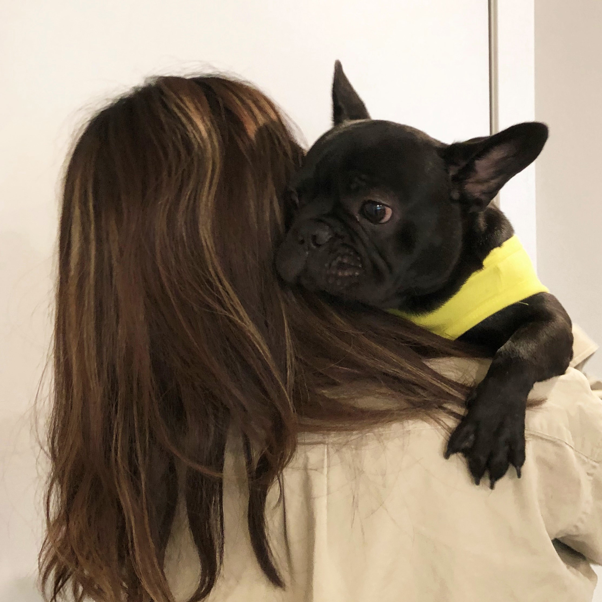

My name is Isabella (Yushan) Ouyang. I am a fourth-year architecture student at Carnegie Mellon University. I believe that architecture is designed for human. Tbe space designed should be able to interact with people. My goal is to study and in hybrid field so that I can create various experience for human.
I am a person who love travelling, drawing, sketching, handcraft and shooting videos. This webstie is used to record the things that I have done and enjoy doing.
